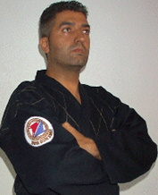
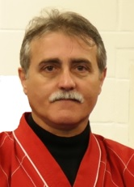

yang hum kwan
Associação portuguesa de hapkido com mais de 25 anos de história em portugal
Hapkido Yanghumkwan
 O Grão Mestre Jong Baek Won é o codificador do Yang Hum Kwan Hapkido. Nasceu no ano de 1959, em Chung Nam (Coreia do Sul). Desde muito jovem, começou a praticar Judo (desporto muito popular no país), até obter a graduação de 2° DAN. Estudou numa das melhores Academias Militares da época, onde praticou Taekwondo e Kendo, artes que não deixou de praticar até ingressar no exército.
O Grão Mestre Jong Baek Won é o codificador do Yang Hum Kwan Hapkido. Nasceu no ano de 1959, em Chung Nam (Coreia do Sul). Desde muito jovem, começou a praticar Judo (desporto muito popular no país), até obter a graduação de 2° DAN. Estudou numa das melhores Academias Militares da época, onde praticou Taekwondo e Kendo, artes que não deixou de praticar até ingressar no exército.
No primeiro ano do serviço militar regular foi colocado nas tropas regulares, onde teve pela primeira vez contacto com o Hapkido. Nos últimos dois anos da sua vida militar, ingressou nos Corpos Especiais Antiterroristas Aéreos, onde o Hapkido se tinha tornado uma parte integrante e indispensável para a sobrevivência.
Após a carreira militar, mudou-se para Espanha(Córdoba), onde ensinou Taekwondo aos seus alunos e Hapkido a um aluno em particular, Antonio Miguel Camino Olea. Actualmente, o Grão Mestre Won, mora em Puente Genil (Província de Córdoba), onde se dedica exclusivamente ao Sondo (estilo de meditação onde é monge), bem como à acupuntura. Também tem um centro dedicado ao turismo rural e ao relaxamento, cujo nome é Sam Shin Dang.
- Grão-Mestre de Hapkido (8º Dan), reconhecido internacionalmente;
- Mestre Internacional de Taekwondo (5º Dan);
- Judo (2º DAN);
- Especialista em Kum-Do e Kum-Shu.
A longa carreira nas artes marciais de Jong Baek Won traduz-se nas seguintes graduações:
A sua personalidade aberta e cordial faz dele uma pessoa reconhecida e muito querida entre os seus alunos.
Mestre Antonio Miguel Camino Olea
Nasceu em 1962 em Córdoba, Espanha. Começou a praticar Taekwondo aos 17 anos. Mais tarde, como Professor de Taekwondo e Diretor Técnico da Federação Andaluza de Taekwondo, conheceu o Grão Mestre Jong Baek Won, com quem aprendeu as técnicas de Hapkido.
Em 1992, fundou a Associacion Yang Hum Kwan Hapkido, uma associação internacional com o fim de recuperar o estilo tradicional de Hapkido desenvolvido pelo DojuNim Choi Yong Sul. Contribuiu para a divulgação do Hapkido em Espanha e em Portugal.
Morre em 27 de dezembro de 2000 de morte súbita. A sua mulher assume a direção da escola, com os alunos a continuarem o ensino e a propagação do hapkido.
- Grão-Mestre de Hapkido World Kido Federation (6º Dan);
- Mestre Internacional de Taekwondo Kukkiwon (4º Dan);
- Koshiki Karate-Do (2° DAN);
- Especialista em Hapkido Policial, Kum-Do e Kum-Shu.
O Mestre Antonio Miguel Camino Olea obteve as seguintes graduações:
Grão Mestre Paulo Filipe Ribeiro dos Reis
O Hapkido foi introduzido em Portugal em 1995 pela mão do Grão Mestre Paulo Reis, atualmente 7°DAN World Kido Federation(Hapkido Yang Hum Kwan). A sua introdução teve lugar no Sport Lisboa e Benfica, o primeiro Dojang de Hapkido Yang Hum Kwan em Portugal.
Decorria o ano de 1995 quando o Sport Lisboa e Benfica, pela mão do Prof. Carlos Garcia, apresentou a proposta ao Grão Mestre Paulo Reis (responsável pela classe de Taekwondo) de iniciar uma classe de Defesa Pessoal. O Grão Mestre Paulo Reis sentiu necessidade de formação específica nessa área e dirigiu-se a Espanha para iniciar a sua formação com o Grão Mestre António Miguel Camino Olea na altura 5º Dan de Hapkido. Após seis meses de constantes deslocações a Espanha, para treino e formação intensiva, o Grão Mestre Paulo Reis iniciou o ensino do Hapkido nas instalações do Estádio da Luz, em outubro do referido ano 1995
Os primeiros alunos, eram na sua maioria ex-praticantes de Taekwondo, e de outras artes marciais como o Judo, Jiu-Jitsu, Aikido, Kickboxing(entre outras), que ficaram deliciados com a eficácia desta arte de defesa pessoal. As primeiras alunas surgiram em 1996, algumas por curiosidade e outras pela necessidade de aprender a defesa pessoal.
Segundo o Grão Mestre Paulo Reis, a divulgação desta modalidade era feita através de um folheto contendo as modalidades e os seus horários, além de uma das principais armas de propaganda serem também os estágios de diferentes estilos marciais, alguns internacionais, que deram a conhecer esta arte marcial a outros praticantes..
O Hapkido Yang Hum Kwan, foi elevado ao seu expoente máximo através do estudo e da exímia habilidade do Grão Mestre António Miguel Camino Olea (6º DAN). O Grão Mestre António Camino Olea, sempre deu o seu apoio, de modo incondicional ao desenvolvimento de Hapkido Yang Hum Kwan em Portugal. Dirigiu 6 Estágios Internacionais, de 1996 a 2000, trazendo a Portugal em 1998 o Fundador do Hapkido Yang Hum Kwan, Grão Mestre Jong Baek Won. Em 1997, realizou os primeiros exames de Cinto Negro e em 1999 ministrou o 1º Curso de Professores.
- Grão Mestre Internacional de Taekwondo Kukkiwon (7º Dan);
- Grão Mestre Internacional Yang Hum Kwan Hapkido Association (7º Dan);
- Grão Mestre The World Kido Federation Hanminjok Hapkido Association (7º Dan);
- Mestre Association Kido España de Hapkido (6º Dan);
- Mestre The Korea Kido Association Hapkido Martial Arts (6º Dan);
- Mestre Internacional Yang Hum Kwan Hapkido Association "Departamento Policial" (4º Dan).
O Grão Mestre Paulo Reis conta com um distinto currículo marcial único em Portugal
Associação Portuguesa de Hapkido Yang Hum Kwan
A pouco e pouco o Hapkido foi ganhando o seu espaço em Portugal e ao fim de um ano em Portugal contava já com cerca de 30 praticantes.
Surgiu então a necessidade de arranjar uma entidade oficial reguladora da modalidade. Assim, foi constituída a 2 de julho de 1996, a Associação Portuguesa de Hapkido Yang Hum Kwan, uma associação desportiva, que tem como objectivo a prática e o desenvolvimento das modalidades que congrega no seu âmbito de ação.
A partir dessa data a Yang Hum Kwan Hapkido Association, passou a ser oficialmente representado em Portugal, pela Associação Portuguesa de Hapkido Yang Hum Kwan, que se encontra filiada na International Yang Hum Kwan Hapkido Association e na The World Kido Federation Hanminjok Hapkido Association.